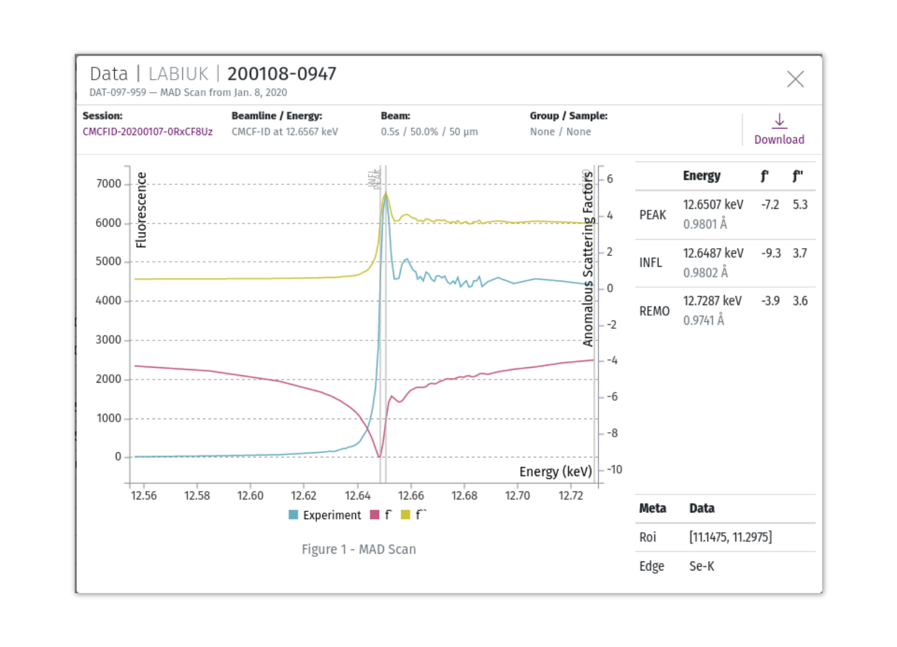

Datasets & Reports¶
Data objects store meta-data about datasets collected on the beamline, and reference files stored on a file server.
Data and Reports are uploaded directly from MxDC on the beamline as they are completed. Full lists of your Datasets and Reports are available under the Search item in the header navigation menu. Those lists can be filtered by date and the type of dataset or report.
Datasets¶
Datasets are viewed in a modal data viewer. Each data type has a custom display format. The data type is determined by MxDC as it is collected.
Diffraction Data¶
MX Screening, MX Datasets, and XRD Datasets (determined by the strategy used to collect data in MxDC) are all displayed in the same diffraction viewer, including a diffraction display area, a snapshot of the sample, a complete list of all frames in the dataset, and meta-data about the collection conditions.
To zoom in on the displayed frame, use the middle scroll button of your mouse, or the zoom buttons in the top left corner. Zoom in on different parts of the image by clicking and dragging the red box in the small legend box in the bottom right corner. Select from three preset contrast levels: dark, normal, or light. Navigate to different frames in the dataset by using the arrow buttons, or select a frame from the list in the right-hand sidebar.

MAD Scans¶
MAD scans show the raw data from the scan, overlaid with the calculated peak, inflection, and remote energies.
XRF Scans¶
X-ray Fluorescence scans are displayed showing raw data overlaid with an analysis of elements likely found in the sample. The most-likely elements are pre-selected, but any element can be selected or deselected to update the displayed analysis.
Downloads¶
You can download individual diffraction frames from a dataset by finding the download icon on the right-hand side of each frame in the frame list. To download complete datasets, click the download icon in the toolbar of the data viewer. An archive of the entire dataset’s directory will be created and streamed to you through your browser.
Warning
Depending on storage limitations at the beamline, your dataset may be deleted after some time. Meta-data will remain on MxLIVE indefinitely. If you are unable to download your data through MxLIVE, it has likely been removed from on-site disks. Please check with beamline staff to confirm.
Reports¶
Reports are displayed in MxLIVE in a similar format to their display in MxDC.
Downloads¶
To download the complete analysis directory, including all analysis files, click the download icon in the toolbar of the report page. An archive of the directory will be created and streamed to you through your browser.
Warning
Depending on storage limitations at the beamline, your analysis files may be deleted after some time. Meta-data will remain on MxLIVE indefinitely. If you are unable to download your report through MxLIVE, it has likely been removed from on-site disks. Please check with beamline staff to confirm.